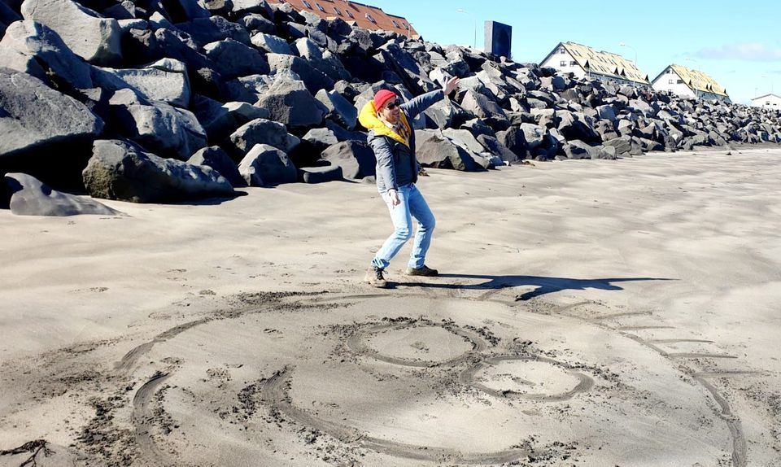

Welcome
Mapping and Modelling Geographic Data in R
About the course
The contents of this course were first developed for a short course at the University of Cape Town (UCT) in August 2022. It also forms part of the MSc Geographic Data Science and Spatial Analytics in the School of Geographical Sciences, University of Bristol.
The aims of this course are to teach an introduction to mapping and spatial modelling in R. It is a course in geographic data science with a particular focus on mapping, measuring and quantifying spatial patterns in data. The present parts of the course are:
- Why use R for mapping and spatial modelling?
- The basics of mapping in R
- The Spatial Variable: from maps towards models
- Spatial clustering and spatial heterogeneity: measuring patterns in data
- Harnessing spatial autocorrelation with geographically weighted statistics
- Spatial regression models
This is a work in progress
Changes will be made and additional content added over time so check back here for the latest updates.
Pre-reading
The following short pre-reading is recommended for the course:
Harris RJ (2019). Not just nuisance: spatialising social statistics. In A Whitworth (ed.) Towards a Spatial Social Policy: Bridging the Gap Between Geography and Social Policy. Chapter 8. Bristol: Policy Press. Available here (or, if that doesn’t work try here).
Other useful resources
Spatial Regression Models for the Social Sciences covers similar statistical ground to this course, For University of Bristol students, it is available to view as an eBook here.

In addition, Geocomputation with R by Robin Lovelace, Jakub Nawosad & Jannes Muenchow offers an extremely useful reference to have to hand if you are stuck when undertaking geocomputation with R. There is a free online version available.

Provisional Masters programme
For the 2022-3 iteration of the Masters unit, the draft teaching schedule is:
| Week | Date | Content |
|---|---|---|
| 1 | Mon Jan 23, 3 - 6pm | Why R & Flavours of R |
| 2 | Mon Jan 30, 3 - 6pm | Mapping the spatial variable (Thematic maps in R) |
| 3 | Mon Feb 13, 3 - 6pm | Measuring spatial autocorrelation |
| 4 | Mon Feb 20, 3 - 6pm | From Maps to models (1): Geographically Weighted Statistics |
| 5 | Mon Mar 6, 3 - 6pm | From Maps to models (2): Spatial Regression |
| 6 | Mon Mar 13, 3 - 6pm | TBC |
About the author
This course is authored by Richard Harris, Professor of Quantitative Social Geography at the University of Bristol. You can find out more about me, my research and other interests at https://profrichharris.github.io/.


Copyright notice
This work is licensed under a Creative Commons Attribution-NonCommercial-ShareAlike 4.0 International License.

@GeogBristol #justsaying!